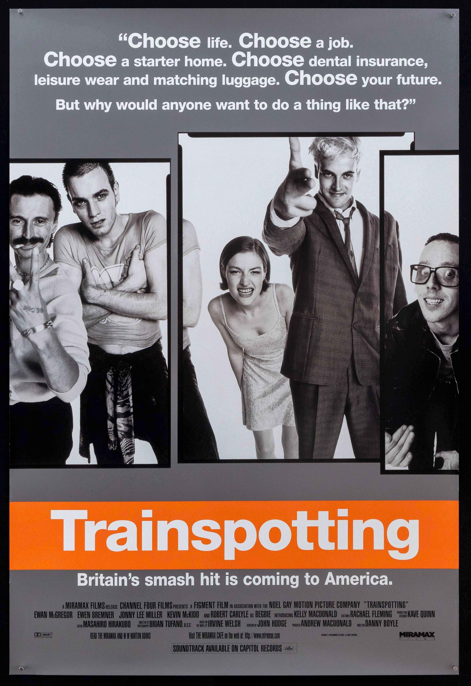
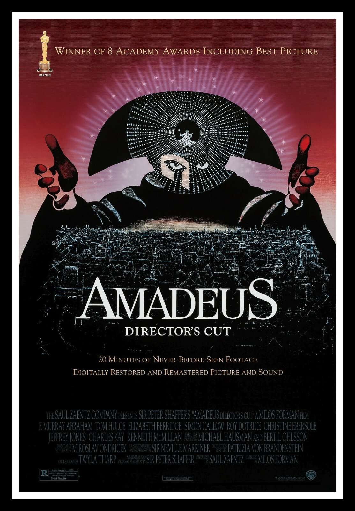

Home
Trainspoting
Heroin addict Mark Renton (Ewan McGregor) stumbles through bad ideas and sobriety attempts with
his unreliable friends -- Sick Boy (Jonny Lee Miller), Begbie (Robert Carlyle), Spud (Ewen Bremner) and Tommy
(Kevin McKidd). He also has an underage girlfriend, Diane (Kelly Macdonald), along for the ride. After cleaning
up and moving from Edinburgh to London, Mark finds he can't escape the life he left behind when Begbie shows up
at his front door on the lam, and a scheming Sick Boy follows.

-
Company Credits: Channel Four Films
-
Release Date: 1996
-
Genres:
-
Dark Comedy
-
Drug Crime
-
Physchological Drama
-
Imdb Rating: 8.1/10
-
Running Time: 93 minnustes
Amadeus
Once the highly regarded composer to the Viennese Court, Salieri is now an old man, unknown and
confined to an asylum. After a suicide attempt he recounts his story to a young cleric, going back 30 years
to his heyday at the court of Emperor Joseph II, where he first met the young Mozart. Despite Salieri's
Machiavellian attempts to frustrate Mozart's progress, the great young composer attracts the favour of the
Emperor.

- Company Credits: The Saul Zaentz Company
- Release Date: 1986
- Genres:
-
Costume Drama
-
Epic
-
Physchological Drama
-
Tragedy
-
Biography
-
Imdb Rating: 8.4/10
-
Running Time: 161 minutes